1. Vita ID in use (default)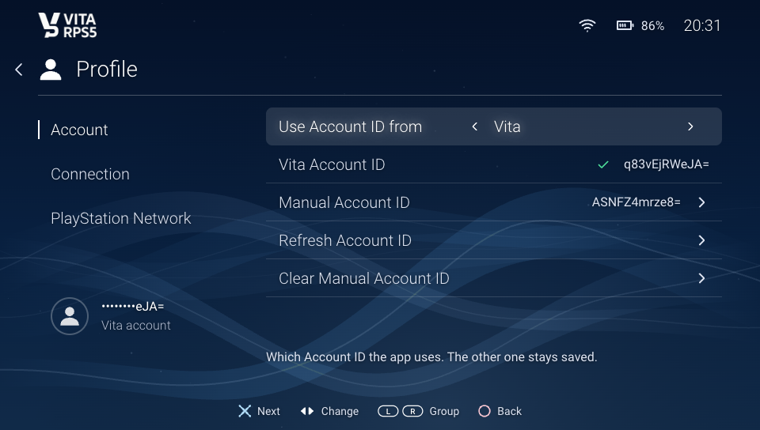
2. Manual ID in use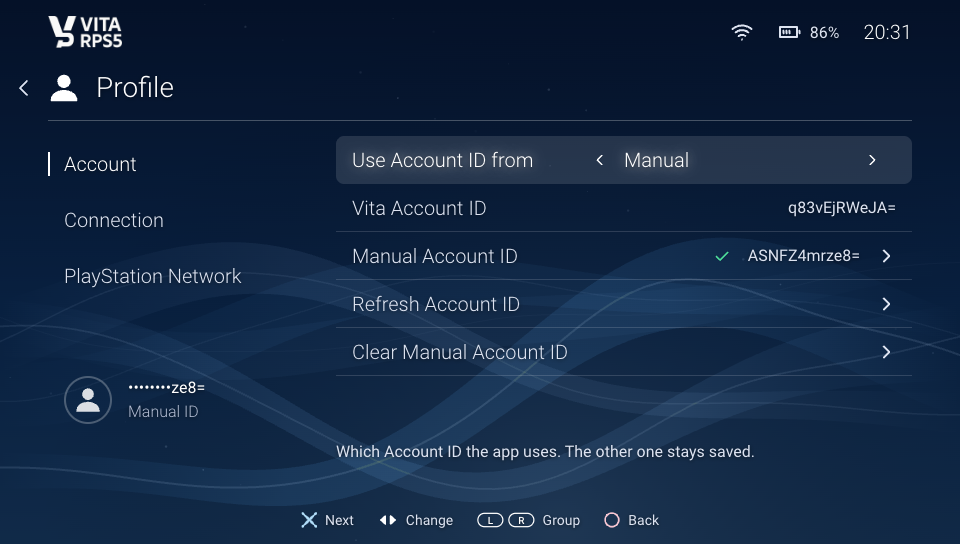
3. No Manual ID yet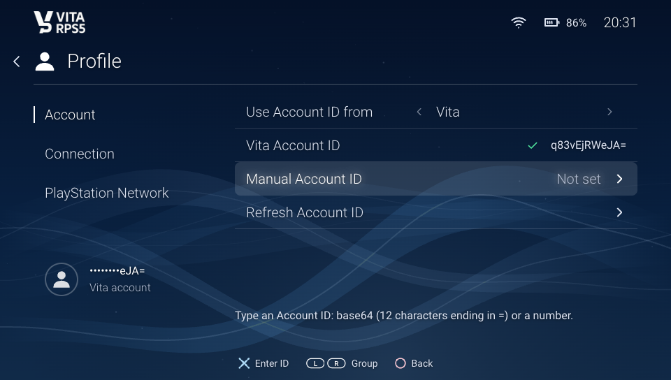
4. Enter ID: system keyboard opens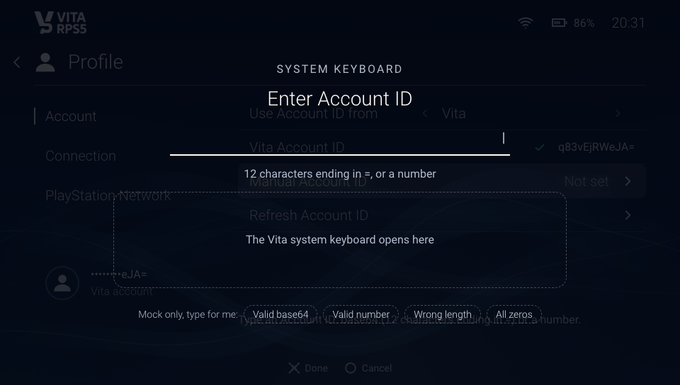
5. Saved: first Manual ID is put in use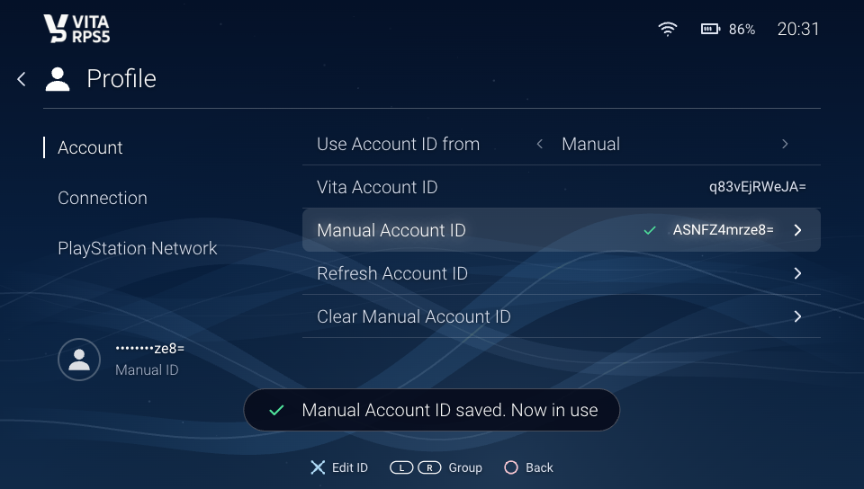
6. Invalid input: refused, nothing saved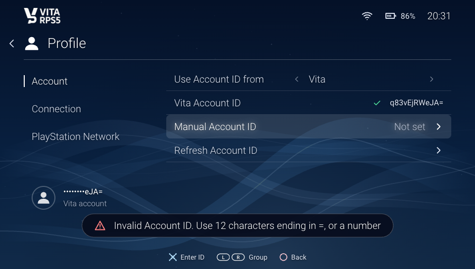
7. Switched back to the Vita ID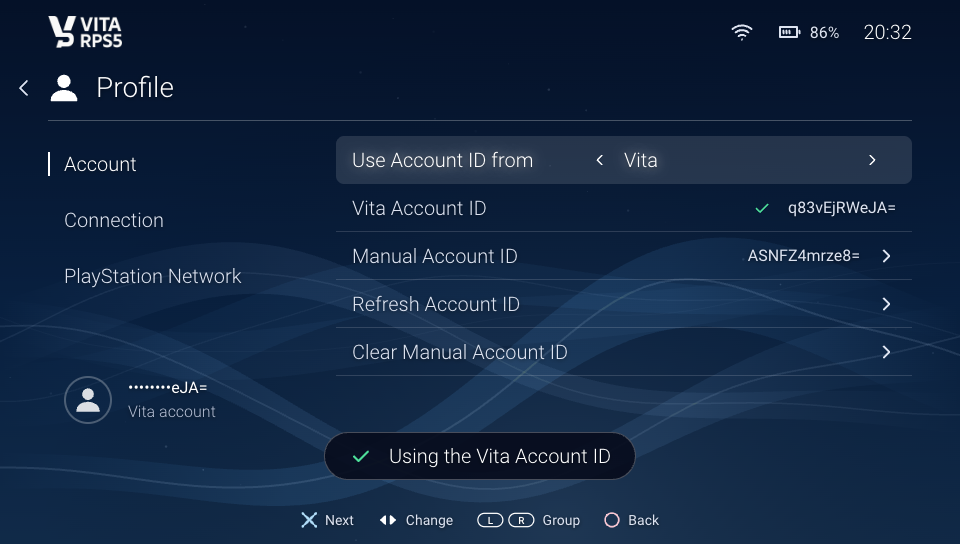
8. Clear, first press: armed for 3 s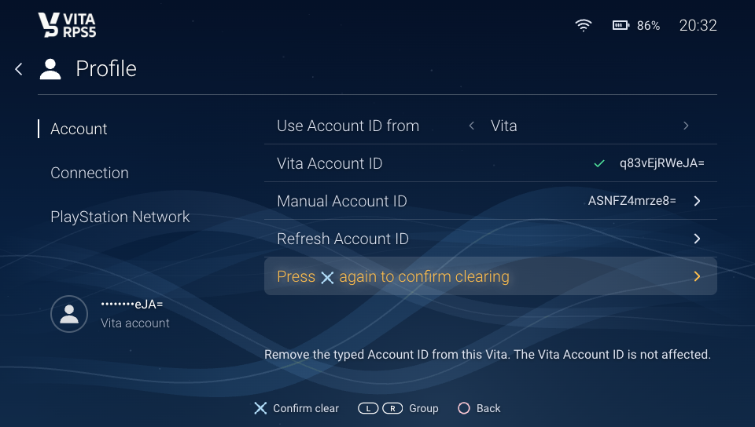
9. Clear confirmed, Manual was in use: back to Vita10. Clear confirmed, Manual not in use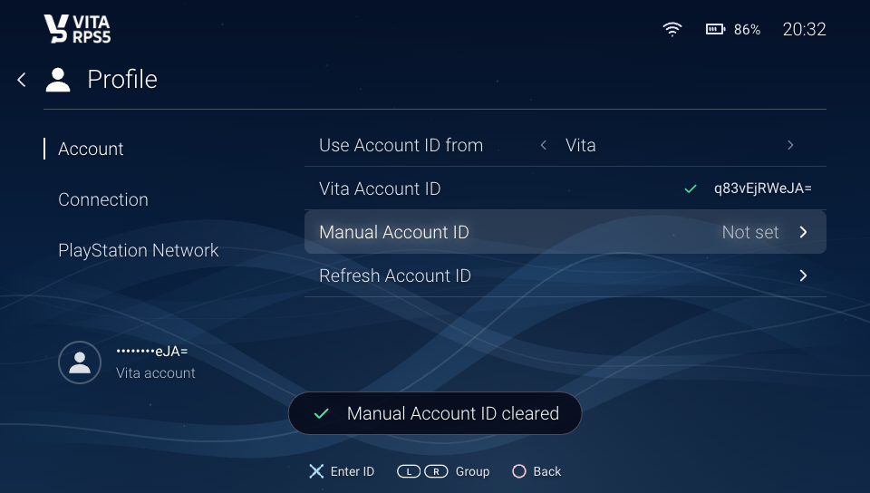
11. Vita has no PSN account (signed out)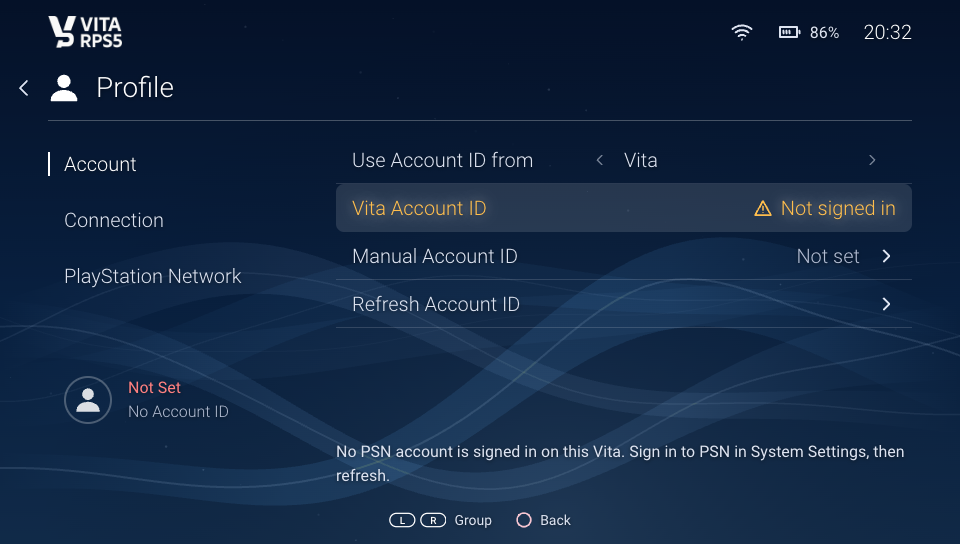
12. Vita profile could not be read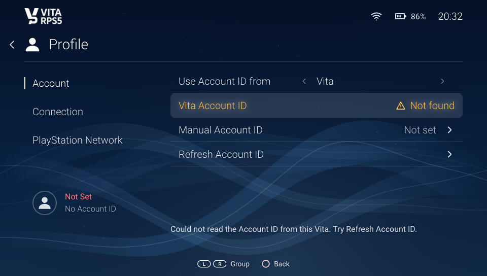
13. Signed out, Manual chosen (fine)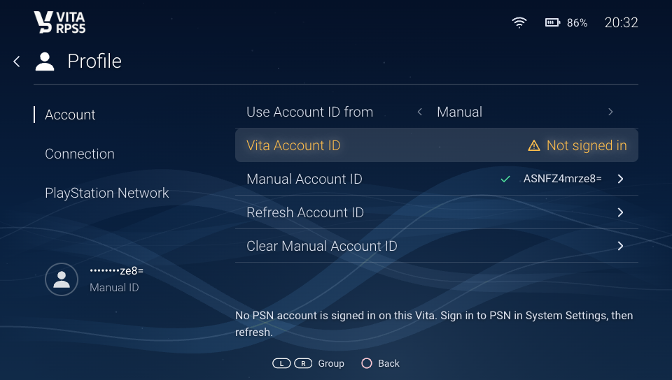
14. Refresh fails when signed out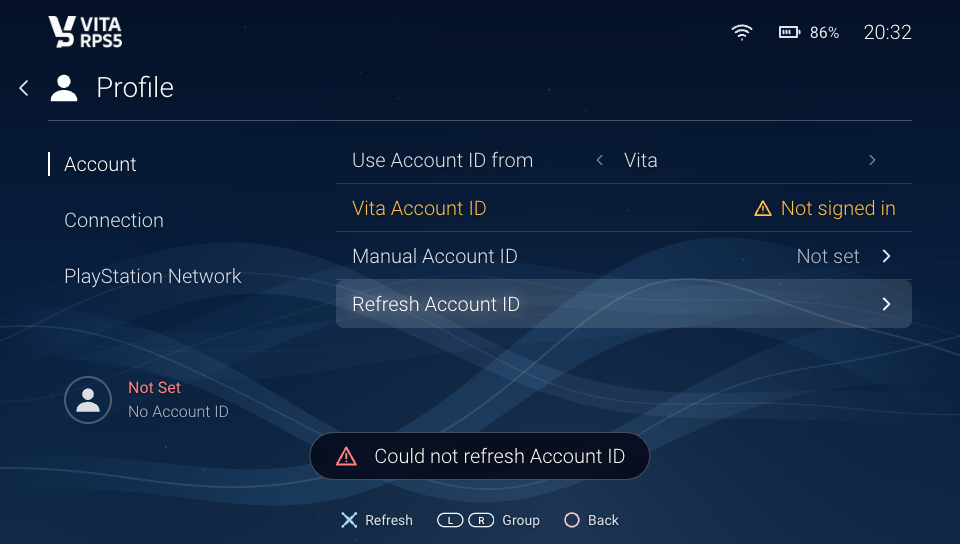
15. A number typed (saved as base64)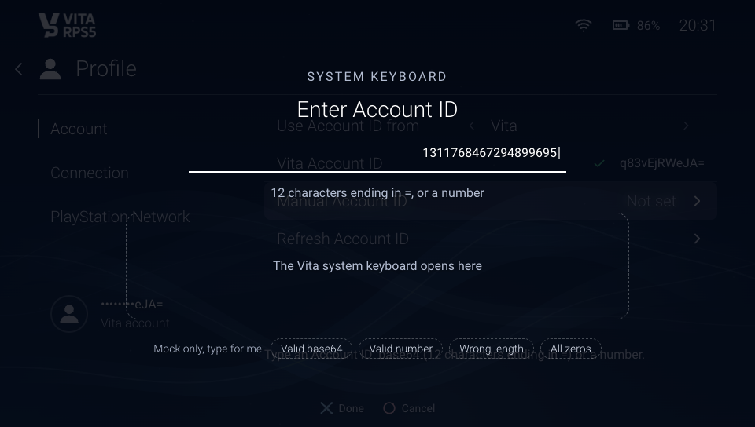